Imersão Grau Zero
Dois dias de oftalmologia cirúrgica discutida em profundidade.
Biometria, lentes de alta tecnologia, decisões clínicas difíceis, experiência do paciente e troca real entre cirurgiões que levam a prática a sério.
A oftalmologia avançou. A formação precisa acompanhar.
A cirurgia de catarata com lentes de alta tecnologia exige muito mais do que habilidade técnica isolada. Exige previsibilidade refrativa, capacidade de tomada de decisão em situações complexas, domínio das calculadoras e, sobretudo, segurança na indicação.
Essa segurança não vem dos livros. Ela vem da discussão com quem opera, erra, aprende e refina, ao longo de anos, caso a caso.
A Imersão Grau Zero existe para condensar esse processo. Em dois dias, você acessa o que normalmente levaria anos de experiência clínica acumulada.
Oftalmologistas que operam com seriedade.
A imersão é para cirurgiões que levam a prática a sério, e que buscam consistência, previsibilidade e uma prática cada vez mais refinada e independente.
Dois dias de conteúdo denso e discussão prática.
Fundamentos & Técnica
Da indicação ao implante, com previsibilidade refrativa.

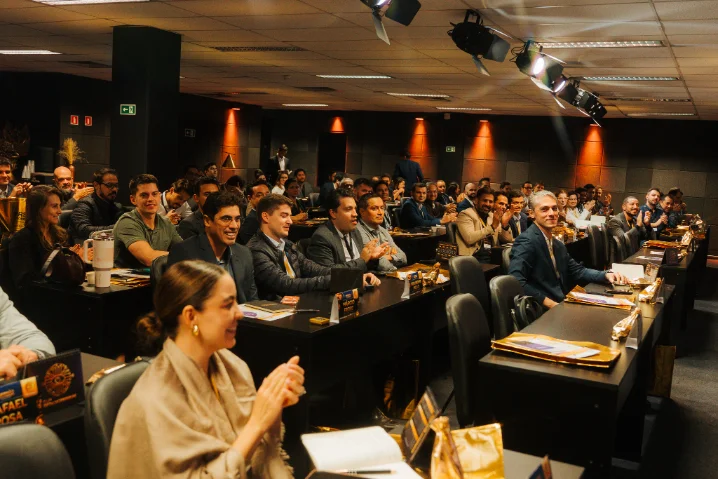
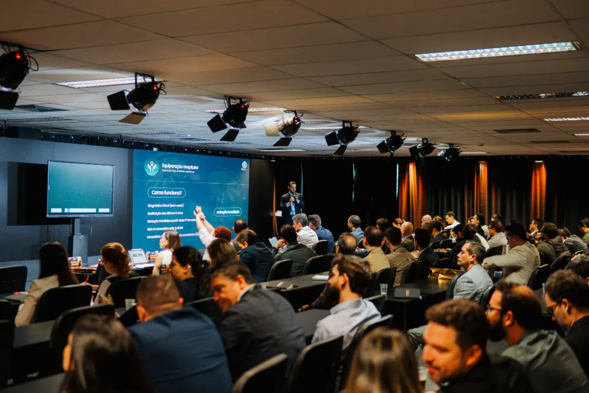
Marketing, Vendas & Modelo de Negócio
Onde muito do aprendizado real acontece.
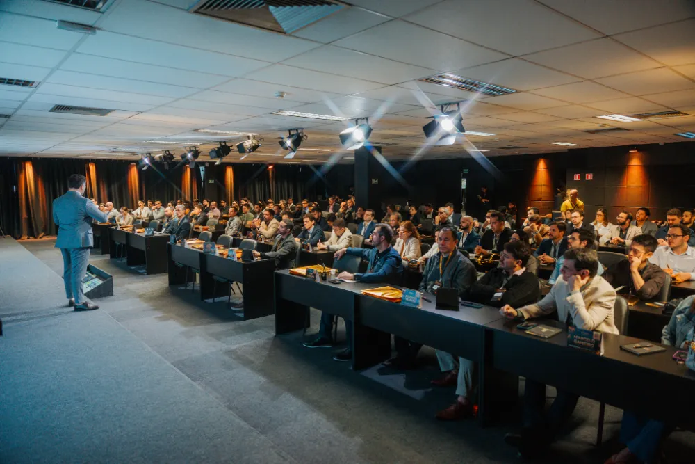
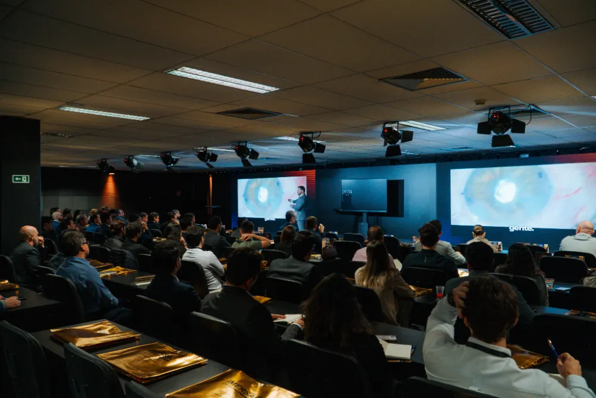
“Os momentos mais valiosos acontecem fora do palco.”
Um colega apresenta um caso. Outro reconhece o padrão. A conversa que se abre raramente acontece em congresso.
A pergunta que você estava guardando há meses finalmente tem a pessoa certa na sua frente para responder.
Cirurgiões em diferentes momentos de carreira trocando protocolos, erros, aprendizados. Sem hierarquia de palco.
Você sai com clareza sobre o próximo caso difícil que vai encarar, e com mais de um colega para ligar quando ele aparecer.
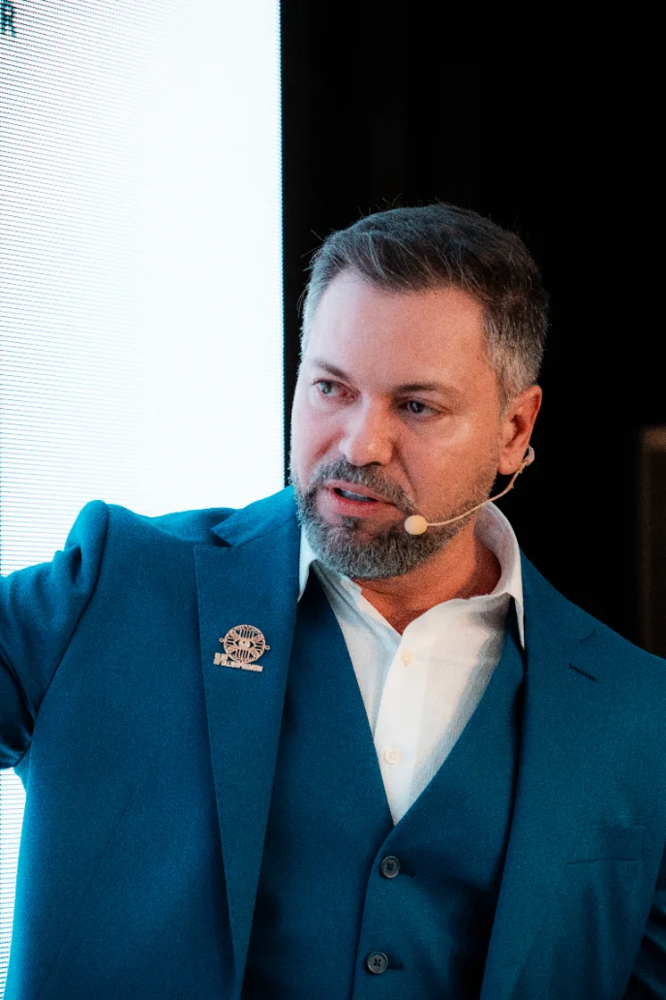
Técnica refinada não se ensina em slides.
Oftalmologista com mais de uma década de atuação em cirurgia de catarata e refrativa, o Dr. Alex Sá construiu sua trajetória entre o centro cirúrgico e a formação médica. Por seis anos foi professor da Universidade Federal do Amazonas e preceptor do fellowship em cirurgia de catarata do Hospital Universitário Getúlio Vargas, participando diretamente da formação de dezenas de cirurgiões.
Criou o Protocolo Grau Zero, metodologia que hoje orienta a indicação e o implante de lentes de alta tecnologia com previsibilidade e segurança refrativa. É autor do livro Cirurgia de Catarata: Habilitando-se para o Aprendizado, inventor do Simulador Sapiens para treinamento cirúrgico, e fundador da Catarata Class, uma das maiores comunidades digitais dedicadas à oftalmologia cirúrgica no Brasil.
Sua convicção é simples: técnica refinada e segurança clínica não se ensinam em slides. Ensinam-se na discussão honesta, caso a caso, entre quem opera de verdade.
O que já foi vivido.
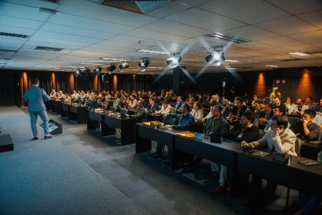
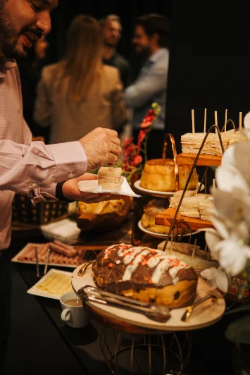
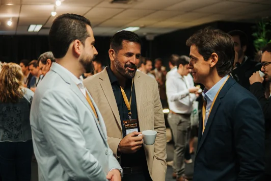
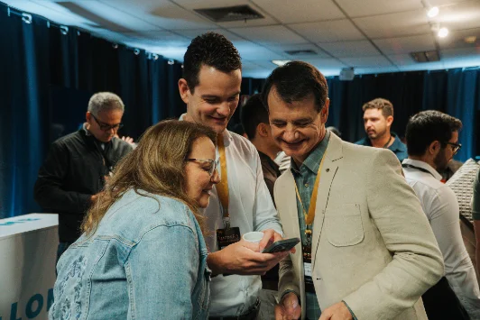
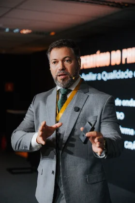
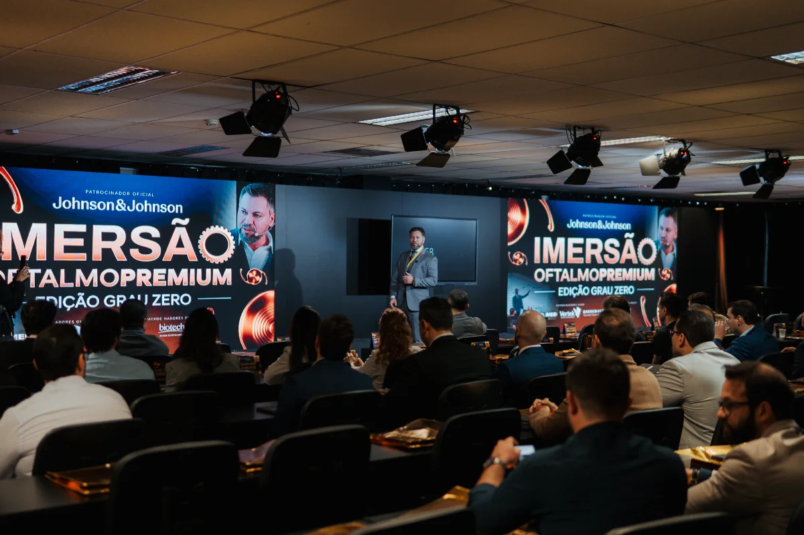
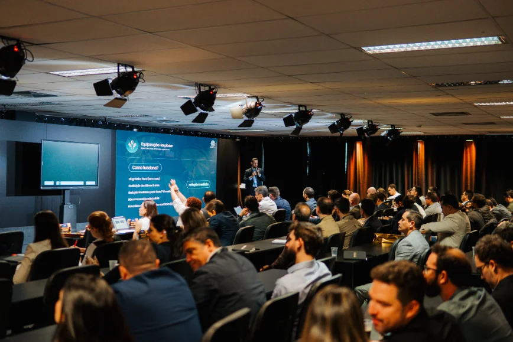
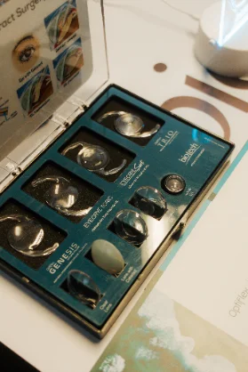
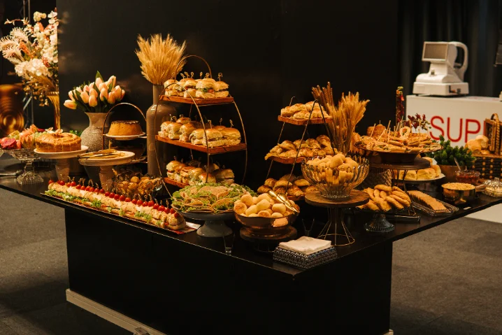
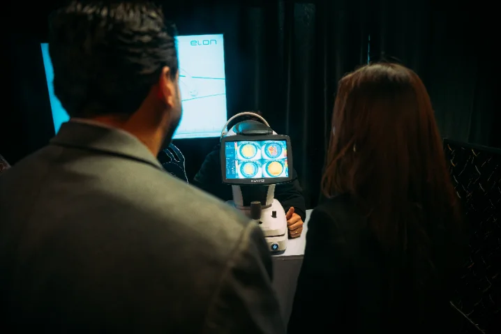
Um espaço à altura da imersão.
Alphaville, em Barueri, recebe a Imersão Grau Zero em um ambiente reservado, pensado para concentração e troca clínica de alto nível. Turma reduzida, atendimento dedicado e uma atmosfera que reforça o rigor que você veio construir.
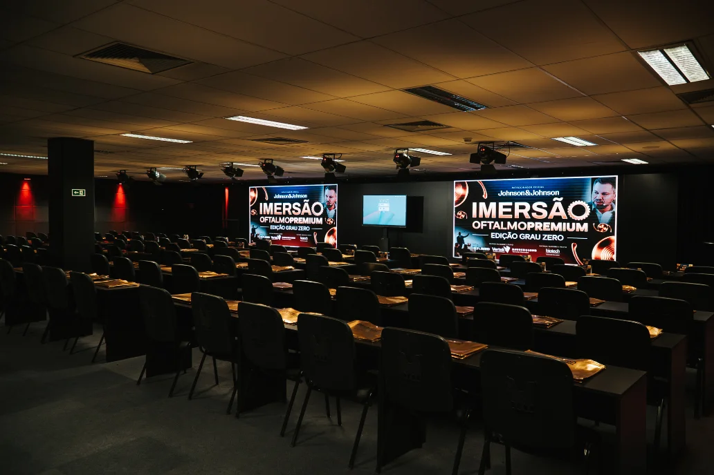
Vagas limitadas.
Valor único.
A turma é reduzida e as vagas são limitadas. O investimento é único: R$ 1.000 por participante, válido até o encerramento das vagas. Não há virada de lote: quem entra agora paga o mesmo valor de quem entrar por último, e a turma fecha quando as vagas acabarem.
Evento presencial · Alphaville, Barueri, SP · 23 e 24 de outubro · Vagas limitadas
A Imersão Grau Zero é presencial, com dois dias de duração, nos dias 23 e 24 de outubro, em Alphaville, Barueri, SP (Av. Copacabana, 238). A turma é reduzida e as vagas, limitadas.
Os dois dias de imersão presencial com o Dr. Alex Sá, o conteúdo completo do Protocolo Grau Zero, os módulos de biometria, calculadoras e aberrometria, a discussão de casos clínicos e os momentos de troca entre pares. Coffee break pela manhã e pela tarde nos dois dias.
Para o oftalmologista que já opera e quer segurança na indicação de lentes intraoculares de alta tecnologia, refinar protocolos, discutir casos com colegas de alto nível e construir uma prática particular mais sólida. Não é um curso introdutório de cirurgia.
Não. A imersão constrói tanto o repertório clínico quanto a confiança de comunicação para indicar com segurança. Independentemente do seu volume atual: o foco é a previsibilidade do resultado e a qualidade da decisão.
A inscrição custa R$ 1.000 por participante, valor único até o encerramento das vagas. Não há lotes nem virada de preço. O pagamento é feito pela plataforma Greenn e a vaga fica garantida na confirmação.